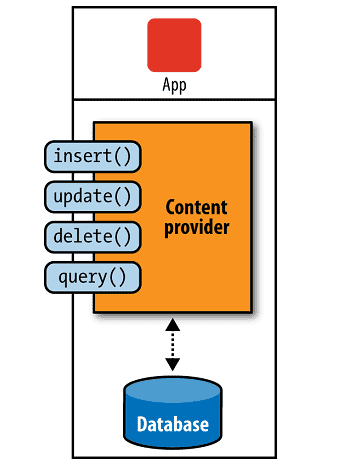

/* Моя кошка замечательно разбирается в программировании. Стоит мне объяснить проблему ей - и все становится ясно. */
John Robbins, Debugging Applications, Microsoft Press, 2000

/* Моя кошка замечательно разбирается в программировании. Стоит мне объяснить проблему ей - и все становится ясно. */
John Robbins, Debugging Applications, Microsoft Press, 2000
Что такое контент-провайдер
Встроенные поставщики
Создание собственного контент-провайдера
Структура унифицированных идентификаторов содержимого (Content URI)
Структурирование МIМЕ-типов в Android
Контент-провайдер или Поставщик содержимого (content provider) - это оболочка (wrapper), в которую заключены данные. Если ваше приложение использует базу данных SQLite, то только ваше приложение имеет к ней доступ. Но бывают ситуации, когда данные желательно сделать общими. Простой пример - ваши контакты из телефонной книги тоже содержатся в базе данных, но вы хотите иметь доступ к данным, чтобы ваше приложение тоже могло выводить список контактов. Так как вы не имеете доступа к базе данных чужого приложения, был придуман специальный механизм, позволяющий делиться своими данными всем желающим.
Поставщик содержимого применяется лишь в тех случаях, когда вы хотите использовать данные совместно с другими приложениями, работающих в устройстве. Но даже если вы не планируете сейчас делиться данными, то всё-равно можно подумать об реализации этого способа на всякий случай.

В Android существует возможность выражения источников данных (или поставщиков данных) при помощи передачи состояния представления - REST, в виде абстракций, называемых поставщиками содержимого. Базу данных SQLite можно заключить в поставщик содержимого. Чтобы получить данные из поставщика содержимого или сохранить в нём новую информацию, нужно использовать набор REST-подобных идентификаторов URI. Например, если бы вам было нужно получить набор книг из поставщика содержимого, в котором заключена электронная библиотека, вам понадобился бы такой URI:
content://com.android.book.BookProvider/books
Чтобы получить из библиотеки конкретную книгу (например, книгу №23), будет использоваться следующий URI:
content://com.android.book.BookProvider/books/23
Любая программа, работающая в устройстве, может использовать такие URI для доступа к данным и осуществления с ними определенных операций. Следовательно, поставщики содержимого играют важную роль при совместном использовании данных несколькими приложениями.
В Android используются встроенные поставщики содержимого (пакет android.provider). Вот неполный список поставщиков содержимого:
На верхних уровнях иерархии располагаются базы данных, на нижних - таблицы. Так, Browser, СаllLog, Contacts, MediaStore и Settings - это отдельные базы данных SQLite, инкапсулированные в форме поставщиков. Обычно такие базы данных SQLite имеют расширение DB и доступ к ним открыт только из специальных пакетов реализации (implerentation package). Любой доступ к базе данных из-за пределов этого пакета осуществляется через интерфейс поставщика содержимого.
Для создания собственного контент-провайдера нужно унаследоваться от абстрактного класса ContentProvider:
public class MyContentProvider extends ContentProvider {
}
В классе необходимо реализовать абстрактные методы query(), insert(), update(), delete(), getType(), onCreate(). Прослеживается некоторое сходство с созданием обычной базы данных.
А также его следует зарегистрировать, как и активность, в манифесте с помощью тега provider с атрибутами name и authorities. Тег authorities служит для описания базового пути URI, по которому ContentResolver может найти базу данных для взаимодействия. Данный тег должен быть уникальным, поэтому рекомендуется использовать имя вашего пакета, чтобы не произошло путаницы с другими приложениями, например:
<provider
android:name:".MyContentProvider"
android:authorities="ru.alexanderklimov.provider.Notepad" />
Источник поставщика содержимого аналогичен доменному имени сайта. Если источник уже зарегистрирован, эти поставщики содержимого будут представлены гиперссылками, начинающимися с соответствующего префикса источника:
content://ru.alexanderklimov.provider.Notepad/
Итак, поставщики содержимого, как и веб-сайты, имеют базовое доменное имя, действующее как стартовая URL-страница.
Необходимо отметить, что поставщики содержимого, используемые в Android, могут иметь неполное имя источника. Полное имя источника рекомендуется использовать только со сторонними поставщиками содержимого. Поэтому вам иногда могут встретиться поставщики содержимого, состоящие из одного слова, например contacts, в то время как полное имя такого поставщика содержимого - com.google.android.contacts.
В поставщиках содержимого также встречаются REST-подобные гиперссылки, предназначенные для поиска данных и работы с ними. В случае описанной выше регистрации унифицированный идентификатор ресурса, предназначенный для обозначения каталога или коллекции записей в базе данных NotePadProvider, будет иметь имя:
content://ru.alexanderklimov.provider.Notepad/Notes
URI для идентификации отдельно взятой записи будет иметь вид:
content://ru.alexanderklimov.provider.Notepad/Notes/#
где # соответствует конкретной записи. Ниже приведено еще несколько примеров URI, которые могут присутствовать в поставщиках содержимого:
content://media/internal/images
content://media/external/images
content://contacts/people/
content://contacts/people/23
Обратите внимание - здесь поставщики содержимого content://media и content://contacts имеют неполную структуру. Это обусловлено тем, что данные поставщики содержимого не являются сторонними и контролируются Android.
Поставщики содержимого также обладают некоторыми характеристиками сетевых служб. Через свои URI поставщик содержимого предоставляет внутренние данные в виде служб. Однако конечной информацией, получаемой по URL поставщика содержимого, являются нетипизированные данные (not typed data), которые предоставляются при вызове веб-службы, основанной на простом протоколе доступа к объектам (SOAP). Такой вывод больше похож на результат запроса, возвращаемый оператором JDВС. Сходство с JDBC является концептуальным. Но между поставщиком содержимого и ResultSet нельзя поставить знак равенства.
Для получения данных из поставщика содержимого нужно просто активировать URI. Однако при работе с поставщиком содержимого найденные таким образом данные представлены как набор строк и столбцов и образуют объект Android cursor. Рассмотрим структуру URI, которую можно использовать для получения данных.
Унифицированные идентификаторы содержимого (Content URI) в Android напоминают HTTP URI, но начинаются с content и строятся по следующему образцу:
content://*/*/*
или
content://authority-name/path-segment1/path-segment2/etc...
Вот пример URI, при помощи которого в базе данных идентифицируется запись, имеющая номер 23:
content://ru.alexanderklimov.provider.Notepad/notes/23
После content: в URI содержится унифицированный идентификатор источника, который используется для нахождения поставщика содержимого в соответствующем реестре. Часть URI ru.alexanderklimov.provider.Notepad представляет собой источник.
/notes/23 - это раздел пути (path section), специфичный для каждого отдельного поставщика содержимого. Фрагменты notes и 23 раздела пути называются сегментами пути (path segments). Одной из функций поставщика содержимого является документирование и интерпретация раздела и сегментов пути, содержащихся в URI.
Обычно разработчик поставщика содержимого внедряет эти функции путем объявления констант в классе или интерфейсе Java в пакете реализации данного поставщика содержимого. В дальнейшем первый раздел пути может указывать на коллекцию объектов. Например, /notes указывает на коллекцию записей (или каталог с записями), а /23 - на определенную запись.
Если URI имеет такой вид, это означает, что поставщик содержимого должен находить строки, определяемые данным URI. Кроме того, поставщик содержимого должен модифицировать содержимое URI, применяя один из методов изменения состояния: вставку (insert), обновление (update) и удаление (delete).
Как веб-сайт возвращает тип MIME для заданной гиперссылки (это позволяет браузеру активировать программу, предназначенную для просмотра того или иного типа контента), так и в поставщике содержимого предусмотрена возможность возвращения типа MIME для заданного URI. Благодаря этому достигается определенная гибкость при просмотре данных. Если мы знаем, данные какого именно типа получим, то можем выбрать одну или несколько программ, предназначенных для представления таких данных. Например, если на жестком диске компьютера есть текстовый файл, мы можем выбрать несколько редакторов, которые способны его отобразить.
Типы MIME работают в Android почти так же, как и в НТТР. Вы запрашиваете у контент-провайдера тип MIME определенного подерживаемого им URI, и поставщик содержимого возвращает двухчастную последовательность символов, идентифицирующую тип MIME в соответствии с принятыми стандартами.
Обозначение MIME состоит из двух частей: типа и подтипа. Ниже приведены примеры некоторых известных пар типов и подтипов MIME:
text/html
text/css
text/xml
image/jpeg
audio/mp3
video/mp4
application/pdf
application/msword
Основные зарегистрированные типы содержимого:
application
audio
image
message
model
multipart
text
video
В Android применяется схожий принцип для определения типов MIME. Обозначение vnd в типах MIME в Android означает, что данные типы и подтипы являются нестандартными, зависящими от производителя. Для обеспечения уникальности в Android типы и подтипы разграничиваются при помощи нескольких компонентов, как и доменные имена. Кроме того, типы MIME в Android, соответствующие каждому типу содержимого, существуют в двух формах: для одиночной записи и для нескольких записей.
Типы MIME широко используются в Android, в частности при работе с намерениями, когда система определяет по МIМЕ-типу данных, какое именно явление следует активировать. Типы MIME всегда воспроизводятся контент-провайдерами на основании соответствующих URI. Работая с типами MIME, необходимо не упускать из виду три аспекта.
Необходимо еще раз подчеркнуть этот момент: основной тип MIME для коллекции элементов, возвращаемый командой cursor в Android, всегда должен иметь вид vnd.android.cursor.dir, а основной тип MIME для одиночного элемента, находимый командой cursor в Android, - вид vnd.android.cursor.item. Если речь идет о подтипе, то поле для маневра расширяется, как в случае с vnd.googlе.note; после компонента vnd. вы можете свободно выбирать любой устраивающий вас подтип.
CallLog: Журнал о входящих, исходящих и пропущенных звонках